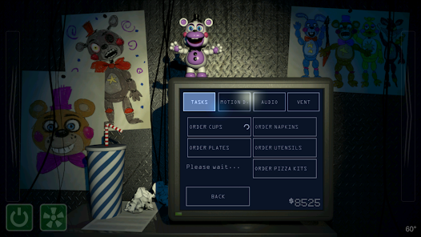

Em *Pizzeria Simulator*, o jogador assume o controle de um pizzaiolo que administra uma pizzaria enquanto luta contra animatrônicos perigosos que aparecem à noite. O jogo mistura elementos de simulação de negócios com mecânicas de sobrevivência de terror. Confronto Final: William Afton, agora como Scraptrap, e outros animatrônicos como Molten Freddy, Scrap Baby e Lefty retornam. Queima Final: O objetivo do jogo é reunir todos os animatrônicos para finalmente destruí-los e acabar com o ciclo de sofrimento.
